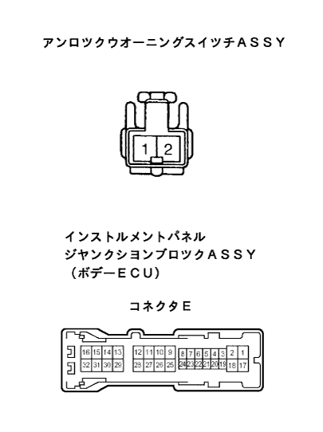
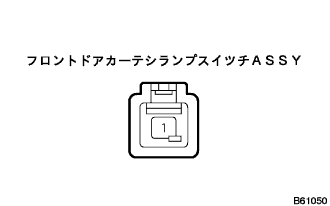
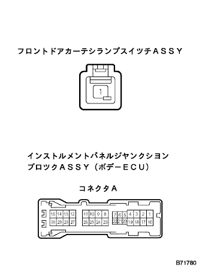

Electric Door Tsukushi System key closed prevention function does not work properly |
| Step 1 | Room lamps and door -on -nin -grular lamps lighting confirmation |
When the driver's seat door is opened, confirm that the room lamp and the doorwone ninema lamp light up.
|
| ||||
| OK | |
| Step 2 | Unlock warning switch Assy Single Inspection |
Conduction inspection
 |
Use SST (Toyota Electrical Tester) to inspect the conductor 1 terminal ← → 2 terminals.
| operation | standard |
|---|---|
| When the pin is not pushed in | Without conduction |
| When the pin is pushed in | There is an conductor |
|
| ||||
| OK | |
| Step 3 | Wire harness inspection |
Wire harness conduction inspection
Separate the connector E of Unro -Wonning Suitsu and Body ECU.
|  |
Use SST (Toyota Electrical Tester) to inspect the conjunction between the vehicle connector of the vehicle side of the unrolled woning suits and the vehicle connector of the body ECU and the body earth.
| Terminal number (Switch ← → Body ECU) | item | Measurement conditions | standard |
|---|---|---|---|
| 2 ← → E26 (KSW) | Conduction | Always | There is an conductor |
| 1 ← → Body Earth | Conduction | Always | There is an conductor |
|
| ||||
| OK | ||
| ||
| Step 4 | Front door curtail lamp switch ASSY single inspection |
Conduction inspection
|  |
Use SST (Toyota Electrical Tester) to check the conversation between 1 connector 1 terminal ← → bracket.
| operation | standard |
|---|---|
| When pushing in the switch | Without conduction |
| When the switch is not pushed in | There is an conductor |
|
| ||||
| OK | |
| Step 5 | Wire harness inspection |
Wire harness conduction inspection
Separate the connector A of the front door curtechi lampsut and body ECU.
|  |
Use SST (Toyota Electrical Tester) to check the conduction between the vehicle connector ← → the vehicle connector terminal of the body ECU of the front door curtec lamp stissure.
| Terminal number (Switch ← → Body ECU) | item | Measurement conditions | standard |
|---|---|---|---|
| 1 ← → A21 (DCTY) | Conduction | Always | There is an conductor |
|
| ||||
| OK | ||
| ||